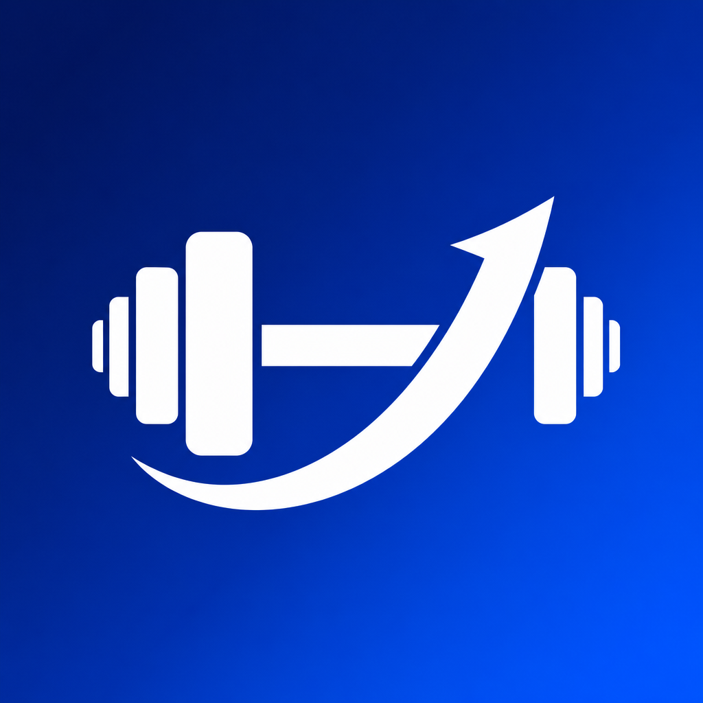
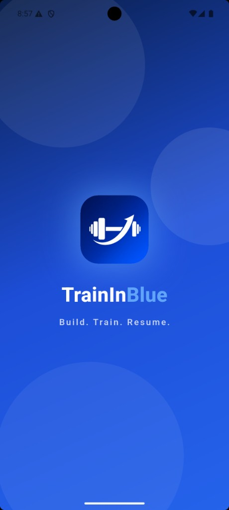
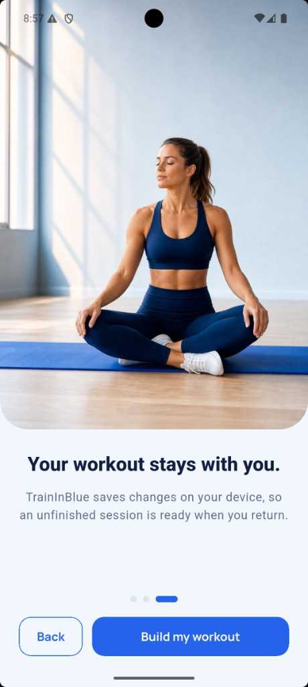
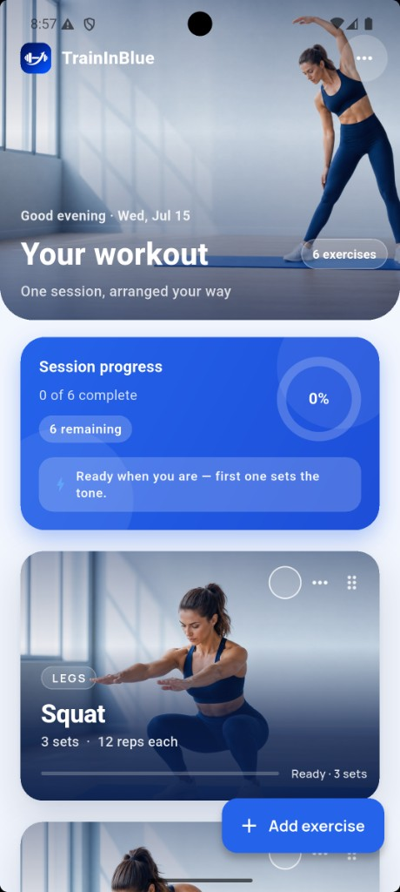
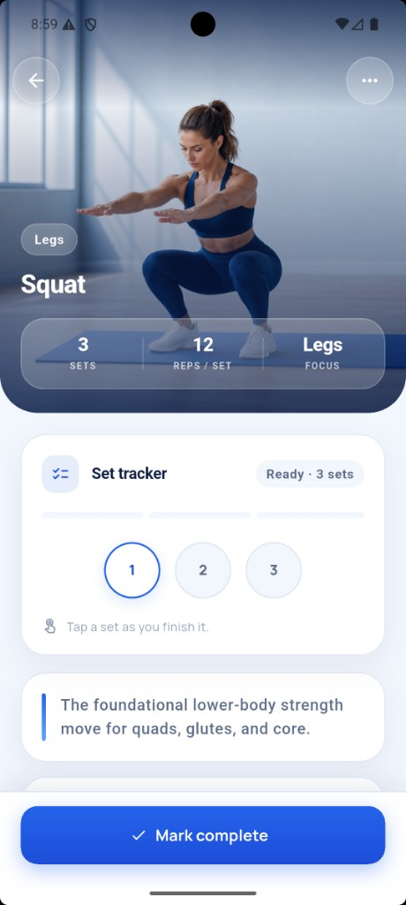
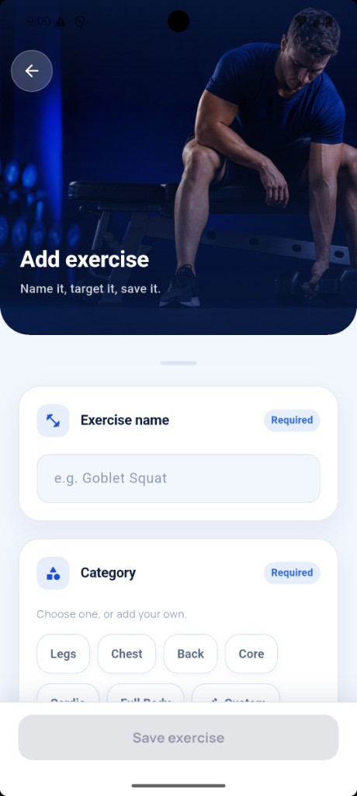
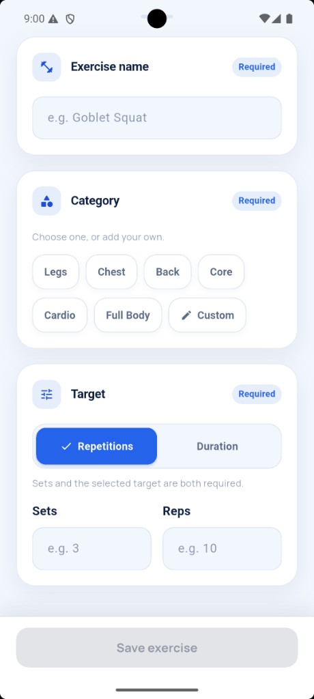

An offline-first Flutter app for building, organizing, completing, and safely resuming a single workout session. No backend, no account, no network — every change is saved on the device and restored exactly where you left off.
A guided tour of the product — from brand and design system to screens, architecture, and how to run it.
TrainInBlue ships with six starter exercises from bundled JSON. It saves every change on the device and restores an unfinished session exactly after the app is closed and reopened. Tap any exercise for a full detail experience — its own photo, key numbers, an interactive set tracker or a countdown timer, coaching content, and complete / edit / delete actions.
Order and completion are restored precisely after the app is closed — an unfinished session is ready when you return.
Every mutation is persisted atomically as one document. Corrupt data is never silently overwritten; you get an explicit recovery choice.
Rep-based exercises get an interactive set tracker; duration exercises get a foreground countdown timer with its own ring.
Deep navy + cobalt #2563EB across every photo, icon and surface, so the app feels like one product.
Every color in the app comes from a single palette (AppColorPalette) so the blue identity stays consistent and easy to adjust from one place.
Weights 400–800 are bundled. Headlines use ExtraBold with tight tracking; body copy uses Regular/Medium for calm, legible reading.
The brand gradient (navy → cobalt → sky) powers heroes, primary actions and progress. Soft navy-tinted shadows give cards a premium, floating feel.
A calm, photographic onboarding sets the tone before dropping you straight into your single, resumable session.

The animated splash centers the TrainInBlue mark over the signature navy gradient with soft floating orbs, then routes to onboarding or straight to the workout depending on saved state.
A short, swipeable intro explains the value in three frames — build, track progress, and resume. The final page confirms that your work stays on the device.

The home screen is the single source of truth for the active workout — live progress up top, reorderable exercise cards below.

A photographic hero greets you by daypart and date. The progress card derives completed / total / remaining / percent in exactly one place, so every surface agrees.
Each exercise opens to its own photo and key numbers. Rep exercises show a tap-to-complete set tracker; duration exercises show a foreground countdown. Coaching steps, tips and equipment sit below.

A focused form makes creating an exercise effortless — name it, pick a category (or add your own), choose a target, save it.

A photographic header frames the task, then clearly-sectioned cards guide input. Required fields are badged, and the save bar stays disabled until the form is valid.
Categories are free text with quick-pick suggestions. Sets and the selected target are both required, so saved data is always complete and renderable.

Screens render state and dispatch intent, the cubit owns rules and persistence ordering, and repositories own storage details. Each concern lives in exactly one place.
lib/ Blocs/ # Cubits: workout session, onboarding flag, theme screens/ # splash, onboarding, workout home, detail, form components/ # reusable cards, buttons, Inputs, dialogs, progress widgets/ # small shared widgets (status view, page dots) Core/ constants/ # colors, strings, asset paths, widget keys services/ # LocalStorageService, NavigationService Utils/ # validators, duration formatter, id generator errors/ # readable application exceptions data/ models/ # Exercise, drafts, snapshot, progress repositories/ # local workout + onboarding repositories app_theme/ # Material 3 theme, typography, color extension
The app has one aggregate — the active workout — so a single cubit is the source of truth for loading, every mutation, persistence and error handling.
Explicit states — loading, ready, empty, failure — keep every UI situation intentional. Event modeling would add ceremony without value at this size.
The whole workout is stored as a single JSON snapshot (schemaVersion, updatedAt, exercises with order + completion) via shared_preferences.
Whole-document writes after every successful mutation — a save either fully succeeds or the previous document stays intact.
Corrupt saved data is never silently replaced; the user gets an explicit recovery choice (try again / start empty).
Every mutation — including reset and start-empty — flows through one _commitSession method that stamps the version + timestamp and persists. Save-failure and retry behavior is uniform for free.
A one-shot flag fires the completion celebration only on the transition to 100%, and never repeats after a restart — pinned by unit tests.
A deliberately small set of well-understood packages. Every dependency earns its place.
| Package | Role in TrainInBlue |
|---|---|
| flutter_bloc | Cubit state management; one source of truth with testable mutations. |
| equatable | Value equality for states and models → predictable rebuilds. |
| shared_preferences | Tiny, reliable key-value store for the single JSON snapshot. |
| flutter_screenutil | Responsive sizing against the 390×844 design canvas. |
| cupertino_icons | Default iOS-style icon set. |
| flutter_launcher_icons (dev) | Generates Android/iOS launcher icons from the brand mark. |
| flutter_lints (dev) | Recommended lint set enforced by flutter analyze. |
Stable channel with Dart 3.11 — verify with flutter --version.
Runs on a simulator, emulator, or a physical device. No network required.
Bundled weights 400–800 for a consistent, crisp type system.
dart format, flutter analyze (zero issues) and flutter test (38 tests) were run after each significant step — not only at the end.
Fakes replace device storage (FakeWorkoutRepository, SharedPreferences.setMockInitialValues); an injectable clock and ID generator keep every test stable and repeatable.
Two commands to a running app. No environment variables, no accounts, no services to stand up.
| Task | Command |
|---|---|
| Run the app | flutter run |
| Format | dart format lib test |
| Analyze | flutter analyze |
| Tests | flutter test |
| Regenerate launcher icons | dart run flutter_launcher_icons |